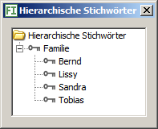

Hierarchische Stichwörter können anderen Stichwörtern über- und untergeordnet sein. Vergeben Sie im Kartenreiter Bearbeiten ein Stichwort, werden alle übergeordneten Stichwörter automatisch mit dem Stichwort gespeichert.
Angenommen, in ihrer Familie leben Peter, Paul und Sandra. Definieren Sie ein Stichwort Familie und ordnen dieser die Namen unter, wird jedesmal das Stichwort Familie automatisch vergeben, falls Sie Peter, Paul oder Sandra als Stichwort vergeben.
Die hierarchischen Stichwörter werden nicht als Hierarchie in die Filialdateien geschrieben, sondern einzeln, da es keinen Standard gibt, der garantiert, dass andere Programme die Hierarchie (richtig) einlesen.
Sie können ein neues Stichwort auf folgende Arten hinzufügen:
Sie ändern den Namen eines Stichworts auf zwei Arten:
Sie löschen ein Stichwort auf zwei Arten:
Klicken Sie mit der linken Maustaste auf ein Stichwort, ziehen es zu einem anderen Stichwort und lassen es dort fallen.
